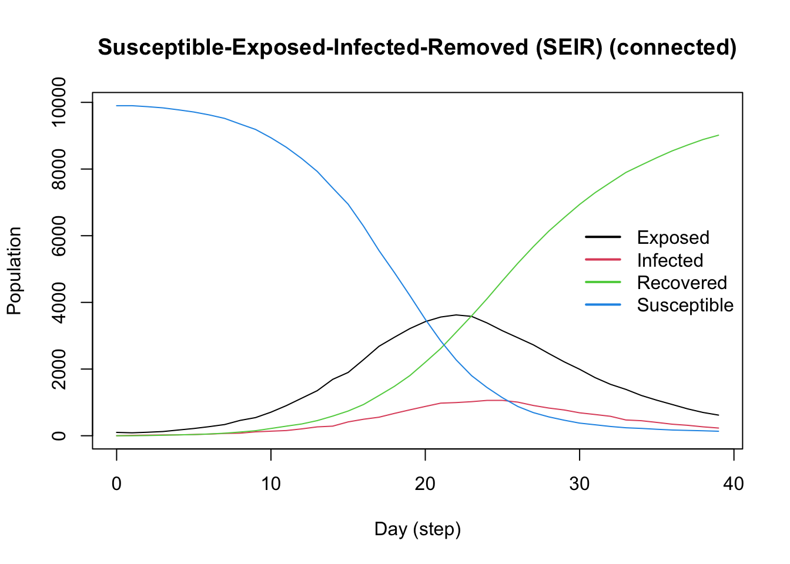

This R package includes several popular epidemiological models, including SIS (wiki), SIR (wiki), and SEIR (wiki) using either a fully connected graph (similar to a compartmental model) or a user-defined network. Here are some examples:
SIR Model Using a Random Graph
This Susceptible-Infected-Recovered model features a population of 100,000 agents simulated in a small-world network. Each agent is connected to ten other agents. One percent of the population has the virus, with a 70% chance of transmission. Infected individuals recover at a 0.3 rate:
Code
library(epiworldR)## Creating a SIR modelsir <-ModelSIR(name ="COVID-19",prevalence = .01,infectiousness = .7,recovery = .3 ) |># Adding a Small world population agents_smallworld(n =100000, k =10, d =FALSE, p = .01) |># Running the model for 50 daysrun(ndays =50, seed =1912)
_________________________________________________________________________
|Running the model...
|||||||||||||||||||||||||||||||||||||||||||||||||||||||||||||||||||||||| done.
| done.
Code
sir
________________________________________________________________________________
SIMULATION STUDY
Name of the model : Susceptible-Infected-Recovered (SIR)
Population size : 100000
Number of entities : 0
Days (duration) : 50 (of 50)
Number of variants : 1
Last run elapsed t : 333.00ms
Last run speed : 14.97 million agents x day / second
Rewiring : off
Global actions:
(none)
Virus(es):
- COVID-19 (baseline prevalence: 1.00%)
Tool(s):
(none)
Model parameters:
- Infectiousness : 0.7000
- Prob. of Recovery : 0.3000
Distribution of the population at time 50:
- (0) Susceptible : 99000 -> 822
- (1) Infected : 1000 -> 415
- (2) Recovered : 0 -> 98763
Transition Probabilities:
- Susceptible 0.91 0.09 0.00
- Infected 0.00 0.70 0.30
- Recovered 0.00 0.00 1.00
_________________________________________________________________________
Running the model...
||||||||||||||||||||||||||||||||||||||||||||||||||||||||||||||||||||||||| done.
done.
Code
model_seirconn
________________________________________________________________________________
SIMULATION STUDY
Name of the model : Susceptible-Exposed-Infected-Removed (SEIR) (connected)
Population size : 10000
Number of entities : 0
Days (duration) : 100 (of 100)
Number of variants : 1
Last run elapsed t : 116.00ms
Last run speed : 8.59 million agents x day / second
Rewiring : off
Global actions:
(none)
Virus(es):
- COVID-19 (baseline prevalence: 1.00%)
Tool(s):
(none)
Model parameters:
- Avg. Incubation days : 7.0000
- Contact rate : 4.0000
- Prob. Recovery : 0.5000
- Prob. Transmission : 0.6000
Distribution of the population at time 100:
- (0) Susceptible : 9900 -> 91
- (1) Exposed : 100 -> 0
- (2) Infected : 0 -> 0
- (3) Recovered : 0 -> 9909
Transition Probabilities:
- Susceptible 0.96 0.04 0.00 0.00
- Exposed 0.00 0.85 0.15 0.00
- Infected 0.00 0.00 0.49 0.51
- Recovered 0.00 0.00 0.00 1.00
Computing some key statistics: plotting and reproductive number (wiki)
Code
plot(model_seirconn)
Code
repnum <-get_reproductive_number(model_seirconn)plot(repnum, type ="b")
_________________________________________________________________________
|Running the model...
|||||||||||||||||||||||||||||||||||||||||||||||||||||||||||||||||||||||| done.
| done.
Code
plot(model_logit)

Code
## Females are supposed to be more likely to become infectedrn <-get_reproductive_number(model_logit)(table( X[, "Female"], (1:n %in% rn$source)) |>prop.table())[,2]
sir <-ModelSIR(name ="COVID-19",prevalence = .01,infectiousness = .5,recovery = .5 ) |># Adding a Small world population agents_smallworld(n =500, k =10, d =FALSE, p = .01) |># Running the model for 50 daysrun(ndays =50, seed =1912)
_________________________________________________________________________
|Running the model...
|||||||||||||||||||||||||||||||||||||||||||||||||||||||||||||||||||||||| done.
| done.